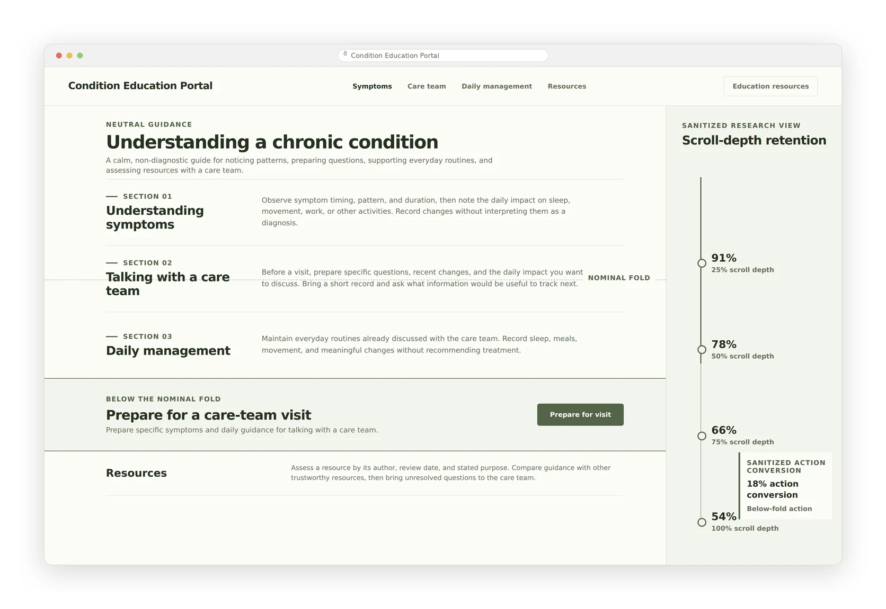
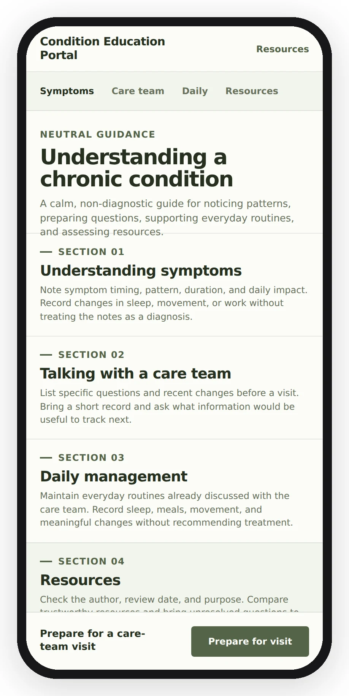

Shipping under full NDA — and keeping the client for two more years

A rare-disease education site has an unusual job: reach patients who may not know they have the condition, carry clinically accurate content, and satisfy a pharmaceutical client's review gauntlet — all at once. This project had one more obstacle: the client didn't believe users would scroll.
01Outcome
The site shipped as the client's first responsive property. Through the redesign, traffic levels, user retention, and time-on-site held steady — meaningful for a total rebuild — while mobile and tablet share grew beyond the pre-redesign mix. The clearest signal was commercial: the client extended the relationship for two more years of responsive sites, tablet apps, and a mobile app, and the continued work matured into a design system that sped both teams up.
02The assumption fight
The client's position was that everything important had to live above the fold — a constraint that would have crushed dense clinical content into an unusable wall. Rather than argue taste, I ran user research to test the assumption directly. The evidence showed users would scroll, provided navigation stayed consistent and each section connected forward to related content. That research didn't just win the argument; it became the site's structural principle.

03Designing under redaction
What I can describe is the shape of the work: stakeholder interviews to define success metrics; a content strategy integrating brand and disease-state information; condensing a high volume of scientific material into flows matched to what patients actually needed at each stage of awareness. The wireframe-to-mockup progression ran through the client's medical-legal review at every step — a constraint that teaches you to make every design decision defensible in writing.

The full working detail
Why each rule exists, and what it costs.
EvidenceWhy “traffic held steady” is the right metric
Full redesigns routinely shed traffic and engagement before recovering. Holding retention and session depth through a ground-up responsive rebuild — while growing mobile and tablet share — means the new architecture absorbed the audience without losing it. For a condition this rare, every retained visitor is disproportionately valuable. The strongest evidence was commercial: the client committed to two more years of products on the strength of this one.
MethodResearch the client can reuse
The above-the-fold fight was never going to be won with taste. The method: design the research so its output was an artifact the client's own team could carry into their internal reviews — evidence about their users, in their language, answering their stakeholders' objection. When your client has to re-sell every decision internally, your research is a gift you're arming them with, and it changes how you scope it.
ConstraintWorking inside medical-legal review
Every content block and interaction pattern needed claims-level defensibility. The practical effect on process: decisions documented with rationale before review, alternatives pre-scoped, and a bias toward patterns that could be validated with research rather than defended with preference. It permanently changed how I prepare design decisions for skeptical rooms.
LessonDesigning when you can't show the work
NDA work forces a discipline that turns out to be valuable everywhere: if you can't show the screens, the story has to carry on decisions, constraints, and outcomes alone. Writing this case study that way revealed which parts of the work had actual substance — and which parts of any portfolio piece are just decoration standing in for a thin story.
An API marketplace for customers who might not be human →
Read the registry as a patient ↗ Simulated product site — built as part of this case study.